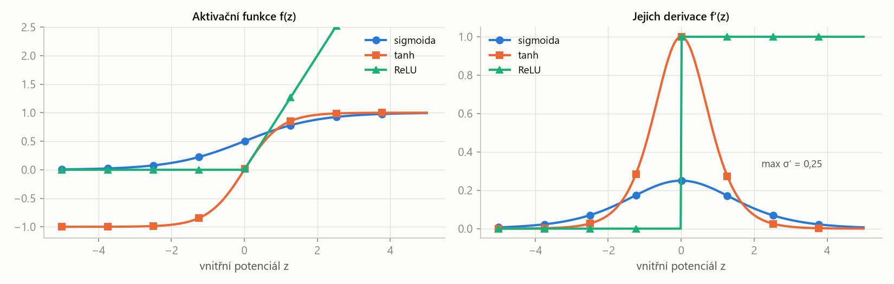
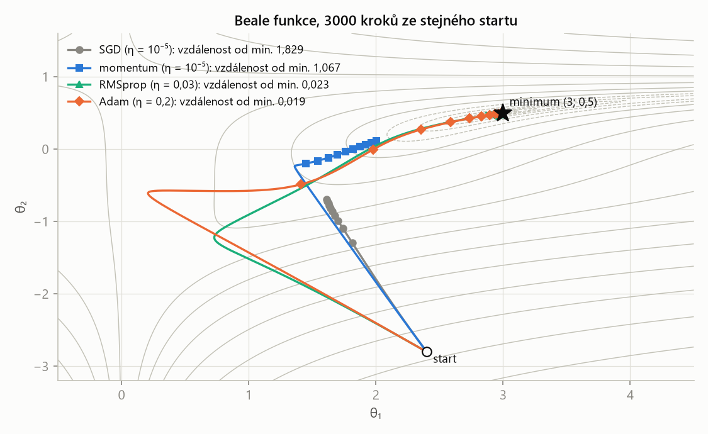
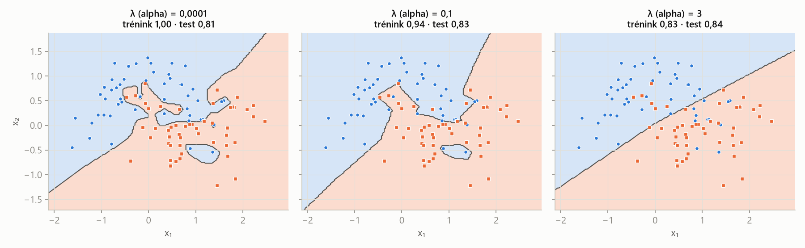
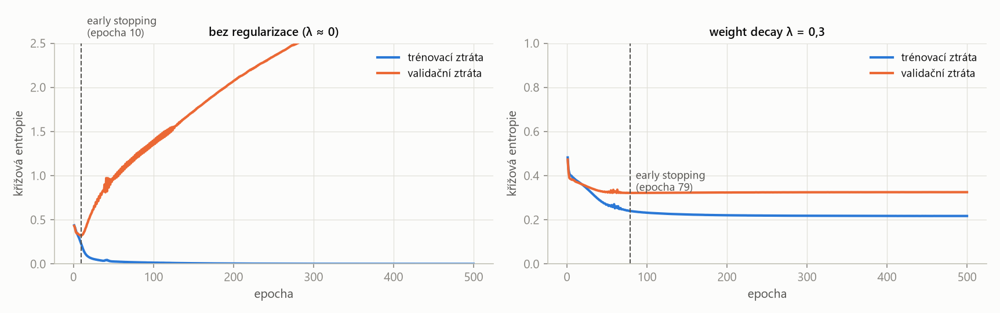

MLR – příprava na zkoušku · Umělé neuronové sítě – MLR · https://balnerm.github.io/pripravy/mlr/07_neuronove_site.html
Přednáška 7
Umělé neuronové sítě
Neuron je vážený součet následovaný jednou nelineární funkcí – všechno ostatní v této kapitole je „účetnictví“ kolem toho. Projdeme, jak se počítá gradient (backpropagation, numericky, autograd), jak s ním udělat dobrý krok (SGD, momentum, Adam), jakou ztrátu zvolit pro regresi, klasifikaci a segmentaci a jak zabránit síti s miliony parametrů, aby se trénovací data naučila nazpaměť (weight decay, dropout, batch normalization, early stopping).
Základy: neuron a aktivační funkce
Neuronová síť je parametrické zobrazení vstupu na výstupní vektor \(\hat{\mathbf y} = f_\theta(\mathbf x)\). Trénování hledá parametry \(\theta\), které minimalizují ztrátu \(L(\mathbf y, f_\theta(\mathbf x))\), gradientním sestupem: \(\theta^{(t+1)} = \theta^{(t)} - \eta\nabla_\theta L\).
velká, pružná funkce s mnoha „knoflíky“ (vahami), které se nastavují stejným gradientním sestupem jako v 1. kapitole. Začátek všeho: Rosenblattův Mark I Perceptron (postaven 1959, veřejně 1960) – síť realizovaná hardwarem.
Umělý neuron spočítá vážený součet vstupů minus práh a výsledek pošle aktivační funkcí \(f\): \(\hat y = f\left[\sum_{i=1}^dw_ix_i - \vartheta\right] = f\left[\sum_{i=0}^dw_ix_i\right]\), kde \(x_0 = 1\) a \(w_0 = -\vartheta = b\) (bias). Hodnota \(z = \sum_{i=0}^dw_ix_i\) je vnitřní potenciál (pre-aktivace), \(\hat y\) je aktivace (výstup).
neuron = lineární model z 4. kapitoly + nelinearita na výstupu. Práh \(\vartheta\) se stejným bias trickem změní na obyčejnou váhu u konstantního vstupu 1.
Aktivační funkce je (obvykle nelineární) funkce \(f\), která převádí vnitřní potenciál neuronu \(z\) na jeho výstup.
bez nelinearity by síť byla k ničemu: afinní funkce z afinní funkce je zase afinní, takže libovolně hluboká síť s lineárními aktivacemi je jen jeden lineární model. Až nelinearita dovolí síti modelovat zakřivené závislosti.
| funkce | \(f(z)\) | obor hodnot | derivace \(f'(z)\) | kde se používá |
|---|---|---|---|---|
| lineární | \(z\) | \(\mathbb R\) | 1 | výstup regrese |
| Heaviside / signum | \(1\) pro \(z\ge0\), jinak 0; \(\operatorname{sign}(z)\) | {0, 1}; {−1, 0, 1} | \(\delta(z)\), resp. \(2\delta(z)\) – jinde nula | historicky perceptron; pro gradientní učení nepoužitelné |
| sigmoida | \(\frac{1}{1 + e^{-z/T}}\) | (0, 1) | \(\frac1Tf(z)(1 - f(z))\), max 0,25 (pro \(T = 1\)) | výstup binární klasifikace (pravděpodobnost) |
| tanh | \(2\sigma(2z) - 1 = \frac{e^{2z}-1}{e^{2z}+1}\) | (−1, 1) | \(1 - f(z)^2\), max 1 | skryté vrstvy (centrovaný výstup) |
| softmax | \(\frac{e^{z_i}}{\sum_{j=1}^Ce^{z_j}}\) | (0, 1), součet 1 | \(f_i(1 - f_i)\) pro \(i = j\), \(-f_if_j\) pro \(i\ne j\) | výstup klasifikace do \(C\) tříd |
| ReLU | \(\max(0, z)\) | \([0, \infty)\) | 0 pro \(z\lt0\), 1 pro \(z\gt0\) | skryté vrstvy (dnešní standard) |

Derivace sigmoidy je nejvýš 0,25 a pro velké \(|z|\) téměř nulová (saturace) – gradient, který backpropagation násobí přes vrstvy, se zmenšuje. Tanh má maximum derivace 1, ale také saturuje. ReLU má pro kladné \(z\) derivaci přesně 1 (nesaturuje), pro záporné 0. Skoková funkce má derivaci skoro všude nulovou – gradient nenese žádnou informaci, proto je pro gradientní učení nepoužitelná.
\(\mathbf z = (2;\ 1;\ 0{,}1)\): \(e^{2} = 7{,}39\), \(e^{1} = 2{,}72\), \(e^{0{,}1} = 1{,}11\), součet 11,21 ⇒ softmax = (0,659; 0,242; 0,099).
Odvození gradientu a backpropagation
| \(\partial L/\partial\hat y\) | závisí na ztrátové funkci; pro \(L = \frac12(\hat y - y)^2\) je to \(\hat y - y\) (chyba) |
| \(\partial\hat y/\partial z = f'(z)\) | závisí na aktivační funkci (lineární 1, sigmoida \(\hat y(1 - \hat y)\)) |
| \(\partial z/\partial w_i = x_i\) | vstup, který váhu násobí |
\(\mathbf x = (1, 2)\), \(\mathbf w = (0{,}5;\ -0{,}25)\), cíl \(y = 1\), \(L = \frac12(\hat y - y)^2\). Vnitřní potenciál \(z = 1\cdot0{,}5 + 2\cdot(-0{,}25) = 0\).
- Lineární aktivace: \(\hat y = 0\), \(L = 0{,}5\); \(\partial L/\partial w_i = (\hat y - y)\cdot1\cdot x_i = -1\cdot x_i\) ⇒ \(\nabla_{\mathbf w}L = (-1, -2)\).
- Sigmoida: \(\hat y = \sigma(0) = 0{,}5\), \(L = 0{,}125\); \(\partial L/\partial w_i = (\hat y - y)\,\hat y(1 - \hat y)\,x_i = (-0{,}5)(0{,}25)x_i\) ⇒ \(\nabla_{\mathbf w}L = (-0{,}125;\ -0{,}25)\).
- Jeden krok (sigmoida, \(\eta = 1\)): \(\mathbf w \leftarrow (0{,}625;\ 0)\) ⇒ \(z = 0{,}625\), \(\hat y = 0{,}651\), \(L = 0{,}061\) – ztráta klesla z 0,125 na 0,061.
Stejný vstup, stejná ztráta, ale gradient je 8× menší: chyba se zmenšila na polovinu (−1 → −0,5) a \(f'(z)\) kleslo z 1 na 0,25 (maximum sigmoidy).
Backpropagation je výpočet gradientu ztráty vůči všem vahám sítě opakovaným použitím řetízkového pravidla od výstupu ke vstupu: v dopředném průchodu se spočítají a uloží vnitřní potenciály a aktivace všech vrstev, ve zpětném průchodu se gradient vrstvu po vrstvě násobí lokálními derivacemi.
chyba na výstupu se „rozpočítá“ zpět na jednotlivé váhy podle toho, jak moc ke chybě přispěly. Každý vstup napájí každý neuron, takže příspěvky k gradientu vstupu se sčítají.
| \(W_k\) | matice vah \(k\)-té vrstvy; \(\nabla_{W_k}L\) má stejný tvar (vnější součin vektoru chyb a vstupů vrstvy) |
| \(\odot\) | násobení po prvcích |
| \(\nabla_{\mathbf h_{k-1}}L\) | gradient poslaný do předchozí vrstvy (příspěvky všech neuronů se sečtou přes \(W_k^\top\)) |
Tři cesty k témuž gradientu
Numerický gradient aproximuje parciální derivaci rozdílem hodnot ztráty po malé změně jedné váhy: \(\frac{\partial L}{\partial w_i} \approx \frac{L(\mathbf w + \varepsilon\mathbf e_i) - L(\mathbf w - \varepsilon\mathbf e_i)}{2\varepsilon}\).
potřebuje jen hodnoty ztráty (funguje i pro „černou skříňku“), ale stojí \(2P\) vyhodnocení pro \(P\) vah a je jen přibližný: velké \(\varepsilon\) = chyba useknutí, malé = zaokrouhlovací chyby a odčítání skoro stejných čísel (ve float64 kolem \(10^{-6}\)–\(10^{-5}\)). Používá se ke kontrole (gradient check) analytického gradientu.
Autograd sestaví z programu výpočetní graf elementárních operací se známými lokálními derivacemi, v dopředném průchodu uloží mezivýsledky a ve zpětném aplikuje řetízkové pravidlo – během několika průchodů tak spočítá přesný gradient vůči všem parametrům (loss.backward() naplní w.grad).
počítač „odvodí“ gradient sám z kódu. Přesný (až na zaokrouhlení), cena nezávisí na počtu parametrů, jen se musí ukládat nebo přepočítávat mezivýsledky. Tak se trénují všechny dnešní sítě.
| numerický | analytický / symbolický | autograd | |
|---|---|---|---|
| potřebuje | jen vyhodnocení funkce | vzorec a jeho derivaci (ručně nebo SymPy) | program z podporovaných operací |
| přesnost | přibližná, závisí na \(\varepsilon\) | přesná | přesná |
| cena gradientu | \(P + 1\) nebo \(2P\) vyhodnocení | vyhodnocení vzorce (odvození dá práci) | pár průchodů pro všech \(P\) |
| rizika | volba kroku, šum | chyby v algebře, bobtnání výrazů | nediferencovatelné operace, paměť |
| použití | malé \(P\), černé skříňky, gradient check | malé úlohy, teorie | velké sítě |
Sigmoidní neuron, \(\mathbf x = (1, 2)\), \(\mathbf w = (0{,}5;\ 0{,}25)\), \(y = 1\): \(z = 1\), \(L \approx 0{,}03616\). Analyticky \(\nabla_{\mathbf w}L = (\sigma(z) - y)\,\sigma'(z)\,\mathbf x \approx (-0{,}05288;\ -0{,}10575)\); numericky s \(\varepsilon = 10^{-5}\) i autogradem vyjde totéž.
Učicí algoritmy (optimalizátory)
(Dávkový) gradientní sestup počítá gradient z průměrné ztráty přes celou trénovací množinu a váhy aktualizuje jednou za epochu. Stochastický gradientní sestup (SGD) aktualizuje váhy po každém jednom vzorku. Mini-batch GD aktualizuje po každé dávce \(b\) vzorků: \(\theta^{(t+1)} = \theta^{(t)} - \eta\nabla_\theta\frac1b\sum_{i\in B_t}L(y^{(i)}, \hat y^{(i)})\).
GD: jeden přesný, ale drahý krok za epochu – pomalé, pro velká data neproveditelné, z lokálního minima neuteče. SGD: mnoho levných, hlučných kroků – rychlejší, šum pomáhá vyskočit z mělkých minim, ale může přestřelit (lék: postupně snižovat \(\eta\); data na začátku každé epochy zamíchat). Mini-batch je kompromis: menší rozptyl kroků než SGD, efektivní paralelizace na GPU – nejpoužívanější varianta (\(b\) od desítek po tisíce podle úlohy a paměti). Epocha = jeden průchod celou trénovací množinou.
- Jak zvolit krok učení?
- Stále je potřeba plán (schedule) kroku učení.
- Stejný krok pro všechny parametry?
- Sedlové body a plata – (téměř) nulový gradient, přestože ztráta ještě může klesat.
- Lokální minima.
Momentum přidá „setrvačnost“: rychlost \(\mathbf u\) akumuluje minulé gradienty, \(\mathbf u^{(t+1)} = \gamma\mathbf u^{(t)} + \eta\mathbf g^{(t)}\), \(\theta^{(t+1)} = \theta^{(t)} - \mathbf u^{(t+1)}\) (typicky \(\gamma = 0{,}9\)). NAG (Nesterov) počítá gradient v bodě, kam nás momentum zrovna nese: \(\mathbf g^{(t)} = \nabla_\theta L(\theta^{(t)} - \gamma\mathbf u^{(t)})\) – „podívá se dopředu“.
těžká koule kutálející se z kopce: v konzistentním směru zrychluje, kmitání napříč úzkým údolím se tlumí a přejede mělké jamky (lokální minima).
AdaGrad dá každému parametru vlastní krok podle součtu čtverců jeho minulých gradientů: \(\mathbf s^{(t+1)} = \mathbf s^{(t)} + (\mathbf g^{(t)})^2\), \(\theta^{(t+1)} = \theta^{(t)} - \frac{\eta}{\sqrt{\mathbf s^{(t+1)}} + \epsilon}\odot\mathbf g^{(t)}\). RMSprop místo součtu používá klouzavý průměr čtverců \(\mathbf s^{(t+1)} = \rho\,\mathbf s^{(t)} + (1 - \rho)(\mathbf g^{(t)})^2\), takže krok neodumře (operace po prvcích, \(\rho = 0{,}9\), \(\epsilon = 10^{-8}\)).
parametry s velkými gradienty dostanou menší krok, s malými větší – krok je „normalizovaný“ velikostí gradientu. AdaGrad ale součet jen roste, takže krok časem skoro zmizí; RMSprop si pamatuje jen nedávnou historii. Varianty: AdaDelta (\(\eta\) nahrazeno RMS minulých kroků), AdaMax (maximum místo RMS), NAdam (Adam + Nesterov).
Adam (adaptive moment estimation) kombinuje momentum a RMSprop: udržuje klouzavý průměr gradientů \(\mathbf m\) (první moment) a jejich čtverců \(\mathbf v\) (druhý moment), oba opraví o zkreslení počáteční nulou (bias correction) a krok je \(\theta \leftarrow \theta - \eta\,\hat{\mathbf m}/(\sqrt{\hat{\mathbf v}} + \epsilon)\). Je to dnes nejpoužívanější optimalizátor.
„těžká koule s třením“ (momentum) + vlastní krok pro každý parametr (RMSprop). Nezasekne se u malého gradientu (sedlo), přenese se přes mělká lokální minima a je mnohem méně citlivý na počáteční krok učení. Problémy neřeší úplně – jen je dělá mnohem méně bolestivými.
| \(\beta_1\) | útlum prvního momentu (průměru gradientů), výchozí 0,9 |
| \(\beta_2\) | útlum druhého momentu (průměru čtverců), výchozí 0,999 |
| \(\epsilon\) | malá vyhlazovací konstanta proti dělení nulou, \(10^{-8}\) |
| \(\hat{\mathbf m}, \hat{\mathbf v}\) | momenty opravené o start z nuly |
Konstantní gradient \(g\), \(\mathbf m^{(0)} = \mathbf v^{(0)} = 0\). První update: \(m = 0{,}1g\), \(v = 0{,}001g^2\) ⇒ bez korekce \(m/\sqrt v = \frac{0{,}1}{\sqrt{0{,}001}}\operatorname{sign}(g) = 3{,}16\operatorname{sign}(g)\) – krok 3,16× větší, než má být. S korekcí \(\hat m = g\), \(\hat v = g^2\) ⇒ \(\hat m/\sqrt{\hat v} = \operatorname{sign}(g)\), krok přesně \(\eta\). Obecně je nekorigovaný krok \(\frac{1 - \beta_1^{t}}{\sqrt{1 - \beta_2^{t}}}\)-krát větší (\(t\) = pořadí updatu): 3,2× v prvním kroku, 6,5× kolem desátého, ještě 1,3× po tisíci krocích. Bez korekce by tedy první kroky byly příliš velké.

Obyčejný SGD se plíží – gradient na stěnách je obrovský, takže \(\eta\) musí být malinké (\(10^{-5}\)) a v ploché dolině pak skoro stojí (vzdálenost od minima 1,83). Momentum se stejným \(\eta\) dojde dál (1,07). RMSprop a Adam normalizují krok velikostí gradientu, takže snesou mnohem větší \(\eta\) a minimum najdou (0,023 a 0,019). V přednášce dále: na sedle \(f = x^2 - y^2\) zůstane plain SGD po 110 krocích sedět, ostatní odejdou; na misce s prstencem lokálních minim SGD, AdaGrad i RMSprop uvíznou, momentum a Adam mají dost setrvačnosti, aby prstenec přejely; AdaDelta na Beale „zamrzne“, AdaGrad se zastaví před minimem.
| parametr | co znamená | ↑ když ho zvětším | ↓ když ho zmenším |
|---|---|---|---|
| krok učení \(\eta\) | velikost kroku proti gradientu | rychlejší pokles, ale ztráta kmitá a od jisté hodnoty diverguje (NaN) | stabilní, ale pomalé učení; uvízne na platech a v mělkých minimech |
| plán kroku učení (schedule) | jak \(\eta\) během učení snižuji | velký krok na začátku (rychlý postup), malý na konci (doladění bez přestřelování); potřebný i u Adamu | |
| velikost dávky \(b\) | kolik vzorků na jeden update | méně hlučný gradient, lepší využití GPU, méně updatů za epochu, víc paměti | víc hlučných updatů (šum pomáhá z mělkých minim), pomalejší výpočet na vzorek; \(b = 1\) je SGD |
| počet epoch | kolikrát projdu trénovací data | nižší trénovací chyba, od jisté epochy přeučení (viz early stopping) | podučení |
| momentum \(\gamma\) (Adam \(\beta_1\)) | jak dlouhou paměť má „setrvačnost“ | hladší, rychlejší pohyb v konzistentním směru, přejede mělká minima, ale může přestřelit a kroužit | chování blíž obyčejnému SGD |
| \(\rho\) (RMSprop), \(\beta_2\) (Adam) | paměť průměru čtverců gradientů | stabilnější normalizace kroku, pomalejší reakce na změnu | rychlá, ale hlučná adaptace kroku |
| \(\epsilon\) | vyhlazení dělení | obvykle se nemění (\(10^{-8}\)); větší hodnota tlumí krok u parametrů s malým gradientem | |
mini-batch varianty; aspoň momentum nebo NAG, dnes standardně Adam (výchozí \(\beta_1 = 0{,}9\), \(\beta_2 = 0{,}999\)) a plán kroku učení. Špatně škálovaný problém nebo nevhodné \(\eta\) ale pokazí i Adam.
Ztrátové funkce
Ztrátová funkce je místo, kde do matematiky vstupuje úloha. Regrese: L1 \(L_i = \|\hat{\mathbf y}_i - \mathbf y_i\|_1\) (absolutní chyba) nebo L2 \(L_i = \|\hat{\mathbf y}_i - \mathbf y_i\|_2^2\) (čtvercová chyba); celková ztráta přes epochu (nebo dávku) je součet, nebo průměr (MAE / MSE). L2 je citlivější na odlehlé hodnoty, L1 není v nule diferencovatelná.
Vážená křížová entropie pro \(C\) tříd v one-hot kódování je \(L_i = -\sum_{c=1}^C\omega_c\,y_{i,c}\log\hat y_{i,c}\), kde \(y_{i,c}\) je skutečná třída (one-hot), \(\hat y_{i,c}\) předpovězená pravděpodobnost (výstup softmaxu) a \(\omega_c\) váha třídy; celková ztráta \(L = \sum_iL_i\). Pro \(\omega_c = 1\) jde o obyčejnou křížovou entropii.
trestá malou pravděpodobnost přiřazenou správné třídě (\(-\log\)). Váhy \(\omega_c\) zvýší cenu chyb na vzácných třídách – řešení nevyváženosti (2. kapitola). Používá se se softmaxem na výstupu.
Tverského ztráta pro binární segmentaci je \(T = 1 - \frac{TP}{TP + \beta\,FN + \alpha\,FP}\), kde \(TP = \sum_iy_{i,1}\hat y_{i,1}\), \(FN = \sum_iy_{i,1}\hat y_{i,0}\), \(FP = \sum_iy_{i,0}\hat y_{i,1}\) se počítají „měkce“ z pravděpodobností a \(\alpha, \beta\) váží falešně pozitivní a falešně negativní pixely.
\(\alpha = \beta = 0{,}5\) ⇒ \(T = 1 - \text{Dice}\) (1 − F1); \(\alpha = \beta = 1\) ⇒ \(1 - \text{Jaccard}\). Při \(\alpha + \beta = 1\): vyšší \(\beta\) = dražší přehlédnutí (FN) = vyšší recall – např. u malých lézí, které nechceme minout.
| parametr | co znamená | ↑ když ho zvětším | ↓ když ho zmenším |
|---|---|---|---|
| váha třídy \(\omega_c\) (WCE) | cena chyby na třídě \(c\) | model víc dbá na třídu \(c\) – recall třídy ↑, ale víc falešných poplachů v její prospěch | třída méně důležitá; při nevyváženosti ji model začne ignorovat |
| \(\beta\) (Tversky) | cena falešně negativních | méně přehlédnutých, recall (TPR) ↑, precision ↓ | víc přehlédnutých |
| \(\alpha\) (Tversky) | cena falešně pozitivních | méně falešných poplachů, precision ↑, recall ↓ | víc falešných poplachů |
Regularizace
Síť s miliony parametrů si trénovací množinu zapamatuje, pokud jí v tom nezabráníme.
Weight decay je L2 penalizace vah přičtená ke ztrátě: \(W^{(t+1)} = W^{(t)} - \eta\nabla_W\left(L + \lambda\|W^{(t)}\|_F^2\right)\), kde \(\|W\|_F^2 = \sum_{j,i}w_{ji}^2\). Gradient penalizace je \(2\lambda W\), takže každý update váhy zmenší směrem k nule – odtud „útlum vah“. (L1 regularizace obdobně, jako LASSO.)
stejný princip jako ridge regrese ve 4. kapitole: malé váhy = hladší funkce = menší přeučení. Působí při každém updatu.

alpha).Bez regularizace (λ = 0,0001) síť obkreslí šum – ostrůvky kolem jednotlivých bodů, trénink 1,00, test 0,81. Střední λ (0,1) hranici vyhladí. Velké λ (3) váhy tak stáhne, že síť je skoro lineární: trénink 0,83, test 0,84 – kdyby λ rostlo dál, začne podučení.
Dropout je regularizace, při které se pro každý trénovací vzorek každý neuron (skryté a vstupní vrstvy) i se svými spoji náhodně ponechá s pravděpodobností \(p\) (Bernoulliho maska), jinak se vypne; výstupy ponechaných neuronů se vydělí \(p\) („inverted dropout“). Gradient a update se počítají jen pro aktivní neurony; pro další vzorek se vylosuje nová maska. Při predikci jsou aktivní všechny neurony a nic dalšího se neupravuje.
každý vzorek trénuje jinou „prořídlou“ podsíť, ale všechny podsítě sdílejí váhy. Je to levná aproximace baggingu: kombinuje \(2^M\) podsítí (\(M\) = počet vypínatelných neuronů) za cenu jediné sítě. Dělení \(p\) zajistí, že očekávaný vstup další vrstvy je stejný při tréninku i predikci – jinak by se při predikci muselo násobit \(p\).
Pět skrytých neuronů s výstupem 1, \(p = 0{,}5\), maska (1, 0, 0, 1, 1) ⇒ (2, 0, 0, 2, 2), součet 6. Zprůměrováno přes všech \(2^5\) masek je součet přesně 5 – stejně jako se všemi neurony zapnutými bez dělení. Síť 3–5–2 s \(p_0 = 0{,}9\) (vstup) a \(p_1 = 0{,}5\) (skrytá): v průměru je aktivních \(3\cdot0{,}9 + 5\cdot0{,}5 + 2 = 7{,}2\) z deseti neuronů (výstupní vrstva se nevypíná nikdy).
Batch normalization je vrstva, která každý příznak (aktivaci) \(j\) v mini-dávce standardizuje průměrem a rozptylem dávky, \(\tilde x_j^{(i)} = (x_j^{(i)} - \mu_{Bj})/\sqrt{\sigma_{Bj}^2 + \epsilon}\), a pak transformuje naučitelným měřítkem a posunem: \(\tilde h_j^{(i)} = \gamma_j\tilde x_j^{(i)} + \beta_j\). Zároveň udržuje klouzavé průměry statistik celého datasetu \(\mu_{Dj} \leftarrow \rho\mu_{Dj} + (1-\rho)\mu_{Bj}\) (obdobně \(\sigma^2_{Dj}\)), které se použijí při predikci.
rozdělení aktivací se během učení mění, jak se mění váhy; BN ho v každé dávce „srovná“ na průměr 0 a rozptyl 1. Parametry \(\gamma, \beta\) (učí se backpropagací – BN je diferencovatelná) vrací síti svobodu zvolit si vlastní měřítko, když standardizace není optimální. Při predikci je celá vrstva jen jedno násobení a jedno sčítání na příznak.
Dávka \(b = 4\) aktivací \(x = (2, 4, 6, 8)\), \(\gamma = 2\), \(\beta = 1\), \(\epsilon\) zanedbáme.
- \(\mu_B = 5\), \(\sigma_B^2 = \frac14(9 + 1 + 1 + 9) = 5\).
- \(\tilde x = \frac{1}{\sqrt5}(-3, -1, 1, 3) = (-1{,}342;\ -0{,}447;\ 0{,}447;\ 1{,}342)\) – průměr 0, rozptyl 1.
- \(\tilde h = 2\tilde x + 1 = (-1{,}68;\ 0{,}11;\ 1{,}89;\ 3{,}68)\).
- Predikce s \(\mu_D = 5\), \(\sigma_D^2 = 5\): \(\gamma^{\text{pred}} = \gamma/\sqrt{\sigma_D^2} = 2/\sqrt5 = 0{,}894\), \(\beta^{\text{pred}} = \beta - \gamma\mu_D/\sqrt{\sigma_D^2} = 1 - 10/\sqrt5 = -3{,}472\); kontrola \(0{,}894\cdot8 - 3{,}472 = 3{,}68\) ✓.
(Kontrolní otázka: dávka (1, 3, 5, 7) ⇒ \(\mu_B = 4\), \(\sigma_B^2 = 5\), \(\tilde x\) = stejné hodnoty ±1,342; ±0,447.)
| výhody | nevýhody | |
|---|---|---|
| dropout | brání přeučení (aproximuje bagging); jednoduchý a levný; kombinuje exponenciálně mnoho podsítí s parametry jedné sítě; lze (a má se) kombinovat s L1/L2 | slabý, když jsou sousední aktivace silně korelované (mapy příznaků v CNN → SpatialDropout, DropBlock) |
| batch normalization | mírně regularizuje (v CNN často nahradí dropout); při predikci zanedbatelná cena; menší závislost na počátečním \(\eta\) a vahách; dovolí vyšší \(\eta\), menší L1/L2 a rychlejší útlum \(\eta\); méně předzpracování; rychlejší učení | potřebuje dost velkou dávku (s velmi malými selhává – u obřích modelů omezuje paměť); kombinace s dropoutem může škodit (posun rozptylu) |
Early stopping je regularizace omezením počtu iterací (epoch) učení: trénování se zastaví (a ponechají se váhy z nejlepší epochy), když validační chyba přestane klesat – podle počtu validačních kontrol bez zlepšení, podle tvaru učicí křivky nebo podle rozevírající se mezery mezi trénovací a validační chybou.
trénovací chyba s epochami klesá pořád, validační od jistého bodu roste – v tom bodě začíná přeučení, tak tam přestaň. Další možnost je omezit velikost modelu: počet skrytých vrstev, neuronů, „hrdla“ (bottleneck).

Bez regularizace trénovací ztráta jde k nule, ale validační má minimum už v 10. epoše a pak roste – síť se učí šum. Early stopping by učení zastavil tam. S weight decay (λ = 0,3) se validační ztráta ustálí a nerozevírá; přeučení brání samotná regularizace a na přesné epoše zastavení tolik nezáleží.
| parametr | co znamená | ↑ když ho zvětším | ↓ když ho zmenším |
|---|---|---|---|
\(\lambda\) (weight decay / alpha) | síla L2 penalizace vah | menší váhy, hladší funkce, méně přeučení; přehnaně = podučení (téměř lineární model) | víc volnosti, přeučení na malých datech |
| \(p\) dropoutu (pravděpodobnost ponechání) | jaký podíl neuronů zůstane aktivní | slabší regularizace (\(p = 1\) = žádný dropout) | silnější regularizace, pomalejší a hlučnější učení; přehnaně = podučení. Typicky ≈ 1 pro vstup, 0,5 pro skryté vrstvy, 1 pro výstup |
| BN \(\gamma_j, \beta_j\) | naučitelné měřítko a posun po standardizaci | nenastavují se ručně – učí se backpropagací | |
| BN: velikost dávky, \(\rho\) | z kolika vzorků se počítají statistiky; útlum klouzavých průměrů | přesnější statistiky dávky, stabilnější BN | hlučné statistiky, při velmi malé dávce BN selhává |
| trpělivost early stoppingu | kolik validačních kontrol bez zlepšení snesu | trénuje déle, riziko přeučení a výpočtu | může skončit předčasně v dočasném platu |
| velikost sítě (vrstvy, neurony) | kapacita modelu | víc kapacity, nižší bias, vyšší rozptyl | méně kapacity, podučení |
Ladění hyperparametrů
Každá změna hyperparametru vyžaduje nové natrénování sítě – a každý přidaný hyperparametr násobí počet potřebných běhů.
Grid search vyzkouší všechny kombinace hodnot z předem zvolené mřížky (hrubá síla – může trvat dny až měsíce). Random search vyzkouší zvolený počet náhodně vylosovaných kombinací z rozsahů hyperparametrů.
random search je při stejném rozpočtu obvykle lepší: když na některém hyperparametru skoro nezáleží, mřížka „plýtvá“ běhy na opakování stejných hodnot toho důležitého, kdežto náhodné body zkusí pokaždé jinou hodnotu každého parametru (Bergstra a Bengio 2012). Lze ho zlepšit postupem hrubě → jemně a rozšířit rozsah, pokud optimum leží na jeho okraji. Dále: evoluční algoritmy (předmět MPA-EAL) a Bayesovská optimalizace (Hyperopt, Spearmint, SMAC).
„Neuron spočítá vážený součet vstupů, bias je váha u konstantní jedničky, a výsledek pošle nelineární aktivací – bez ní by se celá síť složila do jednoho lineárního modelu. Gradient ztráty počítá backpropagation řetízkovým pravidlem: derivace ztráty krát derivace aktivace krát vstup, vrstvu po vrstvě odzadu; v praxi autograd, numerický gradient slouží ke kontrole. Učí se mini-batch gradientním sestupem; momentum přidá setrvačnost, RMSprop vlastní krok pro každý parametr a Adam spojuje obojí s korekcí zkreslení. Pro regresi volím L1 nebo L2, pro klasifikaci křížovou entropii se softmaxem, případně váženou, pro segmentaci Tverského / Dice ztrátu. Přeučení brání weight decay, dropout, batch normalization, early stopping a velikost sítě; hyperparametry ladím spíš random searchem než mřížkou.“
Shrnutí
Neuronová síť je parametrická funkce trénovaná gradientním sestupem. Neuron = vážený součet + aktivační funkce; nelinearita (sigmoida, tanh, ReLU, softmax na výstupu) je nutná, jinak se vrstvy složí do jedné lineární; skoková funkce má nulový gradient. Gradient jednoho neuronu je součin tří faktorů (ztráta, aktivace, vstup); backpropagation ho šíří maticově od výstupu ke vstupu. Numerický gradient je přibližný a drahý, autograd přesný a levný. Mini-batch GD je kompromis mezi GD a SGD; momentum a NAG přidávají setrvačnost, AdaGrad a RMSprop vlastní krok pro každý parametr, Adam obojí s korekcí zkreslení (bez ní by první kroky byly příliš velké). Ztráty: L1/L2 pro regresi, (vážená) křížová entropie se softmaxem pro klasifikaci, Tversky (Dice, Jaccard) pro segmentaci. Regularizace: weight decay (L2), dropout (náhodné podsítě se sdílenými vahami, dělení \(p\)), batch normalization (standardizace v dávce + \(\gamma, \beta\)), early stopping a menší síť. Hyperparametry se ladí random searchem, evolučními algoritmy nebo Bayesovskou optimalizací.
Take-home messages
- Neuron = lineární model + nelinearita; bez nelinearity je hluboká síť jen jeden lineární model.
- \(\partial L/\partial w_i\) = (derivace ztráty) × (derivace aktivace) × (vstup); sigmoida gradient zmenšuje (max 0,25).
- Backpropagation = řetízkové pravidlo odzadu; v praxi autograd, numerický gradient na kontrolu.
- Mini-batch GD; Adam = momentum + RMSprop + korekce zkreslení; i tak potřebuje plán kroku učení.
- ↑η = rychleji, ale divergence; ↓η = pomalu a uvíznutí.
- Klasifikace: softmax + křížová entropie; segmentace: Tversky/Dice; vyšší β = vyšší recall.
- Regularizace: ↑λ, ↓p dropoutu, early stopping, menší síť – vše proti přeučení.
Otázky ke zkoušce
Napište výstup jednoho neuronu. Jak se práh ϑ změní na váhu? Proč síť s lineárními aktivacemi není lepší než jeden neuron?
\(\hat y = f(\sum_{i=1}^dw_ix_i - \vartheta) = f(\sum_{i=0}^dw_ix_i)\) s \(x_0 = 1\), \(w_0 = -\vartheta\) (bias trick). Složení afinních funkcí \(W_2(W_1\mathbf x + \mathbf b_1) + \mathbf b_2\) je opět afinní funkce, takže libovolně mnoho vrstev s lineární aktivací je ekvivalentních jedné lineární vrstvě – nelinearitu přinese až nelineární aktivace.
Porovnejte sigmoidu, tanh, softmax a ReLU. Proč jsou skokové funkce pro gradientní učení nepoužitelné?
Sigmoida: (0, 1), \(f' = f(1-f)\) max 0,25, výstup binární klasifikace. Tanh: (−1, 1), \(f' = 1 - f^2\) max 1, centrovaná, skryté vrstvy. Softmax: vektor pravděpodobností se součtem 1, výstup víceklasové klasifikace. ReLU: \(\max(0, z)\), derivace 0 nebo 1, nesaturuje, standard skrytých vrstev. Skoková funkce má derivaci skoro všude nulovou (Diracův impulz v nule) – gradient nenese informaci, kam váhy posunout.
Napište tři faktory ∂L/∂wᵢ pro jeden neuron a řekněte, na čem každý závisí.
\(\frac{\partial L}{\partial w_i} = \frac{\partial L}{\partial\hat y}\cdot\frac{\partial\hat y}{\partial z}\cdot\frac{\partial z}{\partial w_i}\): první závisí na ztrátě (pro \(\frac12(\hat y - y)^2\) je to \(\hat y - y\)), druhý na aktivaci (\(f'(z)\)), třetí je vstup \(x_i\). Příklad: \(\mathbf x = (1,2)\), \(\mathbf w = (0{,}5; -0{,}25)\), \(y = 1\): lineární aktivace dá \(\nabla L = (-1, -2)\), sigmoida \((-0{,}125; -0{,}25)\) – 8× menší (chyba poloviční, \(f'\) = 0,25).
Popište dopředný a zpětný průchod obecné sítě maticově. Jaký tvar má ∇_{W_k}L a proč?
Dopředu \(\mathbf z_k = W_k\mathbf h_{k-1}\), \(\mathbf h_k = f(\mathbf z_k)\) (uložit). Zpět \(\nabla_{\mathbf z_k}L = \nabla_{\mathbf h_k}L\odot f'(\mathbf z_k)\), \(\nabla_{W_k}L = \nabla_{\mathbf z_k}L\,\mathbf h_{k-1}^\top\), \(\nabla_{\mathbf h_{k-1}}L = W_k^\top\nabla_{\mathbf z_k}L\). \(\nabla_{W_k}L\) má stejný tvar jako \(W_k\) (počet výstupů × počet vstupů vrstvy) – je to vnější součin vektoru chyb vrstvy a jejích vstupů; jinak by se nedalo provést \(W_k - \eta\nabla_{W_k}L\).
Jak se liší analytický, numerický a autograd gradient? Proč se gradient kontroluje konečnými diferencemi?
Analytický: odvozený vzorec, přesný, ale pracné a náchylné k chybám v algebře. Numerický: centrální diference \((L(\mathbf w + \varepsilon\mathbf e_i) - L(\mathbf w - \varepsilon\mathbf e_i))/2\varepsilon\), potřebuje jen hodnoty funkce, ale je přibližný (volba \(\varepsilon\)) a stojí \(2P\) vyhodnocení. Autograd: výpočetní graf + řetízkové pravidlo, přesný, cena pár průchodů nezávisle na \(P\). Konečné diference jsou nezávislá, jednoduchá kontrola, že ručně odvozený či implementovaný gradient nemá chybu.
Porovnejte GD, SGD a mini-batch GD. Uveďte pět problémů obyčejného gradientního sestupu.
GD: update jednou za epochu z celé množiny – přesný, ale pomalý, neproveditelný pro velká data. SGD: update po každém vzorku – rychlý, hlučný (šum pomáhá z mělkých minim), může přestřelit. Mini-batch: update po \(b\) vzorcích – menší rozptyl než SGD, paralelizace na GPU, nejpoužívanější. Problémy: volba kroku učení; potřeba plánu kroku učení; stejný krok pro všechny parametry; sedla a plata (nulový gradient); lokální minima.
Napište update Adamu včetně korekce zkreslení. Co dělají β₁, β₂ a ε? Byly by první kroky bez korekce příliš malé, nebo velké?
\(\mathbf m \leftarrow \beta_1\mathbf m + (1-\beta_1)\mathbf g\), \(\mathbf v \leftarrow \beta_2\mathbf v + (1-\beta_2)\mathbf g^2\), \(\hat{\mathbf m} = \mathbf m/(1-\beta_1^t)\), \(\hat{\mathbf v} = \mathbf v/(1-\beta_2^t)\), \(\theta \leftarrow \theta - \eta\hat{\mathbf m}/(\sqrt{\hat{\mathbf v}} + \epsilon)\). \(\beta_1\) (0,9) = paměť průměru gradientů (momentum), \(\beta_2\) (0,999) = paměť průměru čtverců (normalizace kroku), \(\epsilon\) brání dělení nulou. Bez korekce by byly první kroky příliš velké (3,16× v prvním kroku, 6,5× kolem desátého), protože \(\mathbf v\) startující z nuly je podhodnocené víc než \(\mathbf m\).
Proč obyčejný SGD uvízne u sedlového bodu a adaptivní metody ne?
V sedle je gradient téměř nulový, takže krok \(\eta\mathbf g\) je téměř nulový a SGD stojí. Momentum si nese rychlost z předchozích kroků, a adaptivní metody (RMSprop, Adam) dělí gradient jeho typickou velikostí \(\sqrt{\mathbf v}\) – i malý, ale konzistentní gradient tak dá rozumně velký krok a metoda ze sedla odejde.
Napište váženou křížovou entropii. Jakou aktivaci s ní použít? Co v Tverského ztrátě řídí α a β?
\(L_i = -\sum_c\omega_cy_{i,c}\log\hat y_{i,c}\) s one-hot \(y\) a pravděpodobnostmi \(\hat y\) – na výstupu softmax (u binární úlohy sigmoida). Tversky \(T = 1 - TP/(TP + \beta FN + \alpha FP)\): \(\alpha\) váží falešně pozitivní, \(\beta\) falešně negativní; \(\alpha = \beta = 0{,}5\) dává 1 − Dice (F1), \(\alpha = \beta = 1\) dává 1 − Jaccard; vyšší \(\beta\) (při \(\alpha + \beta = 1\)) zvyšuje recall.
Vysvětlete dropout při tréninku a při predikci. Proč se výstupy dělí p?
Při tréninku se pro každý vzorek každý neuron ponechá s pravděpodobností \(p\) (jinak vypne i se spoji), výstupy ponechaných se vydělí \(p\); gradient a update jen pro aktivní neurony; další vzorek má novou masku. Trénují se tak podsítě se sdílenými vahami – aproximace baggingu \(2^M\) podsítí za cenu jedné sítě. Při predikci jsou aktivní všechny neurony. Dělení \(p\) zajistí stejný očekávaný vstup další vrstvy při tréninku i predikci (5 neuronů s výstupem 1, \(p = 0{,}5\): průměrný součet přes masky 5); bez něj by se při predikci musely výstupy násobit \(p\).
Popište kroky batch normalization. Proč potřebuje γ a β a proč při predikci nic nestojí?
1) průměr a rozptyl dávky pro každý příznak (a klouzavé průměry pro celý dataset); 2) standardizace \((x - \mu_B)/\sqrt{\sigma_B^2 + \epsilon}\); 3) \(\gamma\tilde x + \beta\); 4) předání dalším vrstvám; 5) učení \(\gamma, \beta\) backpropagací; 6) opakování pro každou dávku; 7) po tréninku přepočet na \(\gamma^{\text{pred}}, \beta^{\text{pred}}\) z klouzavých statistik. \(\gamma, \beta\) vrací síti možnost zvolit jiné měřítko a posun než (0, 1), pokud je to výhodnější. Při predikci je vrstva jen \(\gamma^{\text{pred}}x + \beta^{\text{pred}}\) – jedno násobení a sčítání na příznak.
Jak poznat, že je čas zastavit trénování? Proč je random search obvykle lepší než grid search?
Validační chyba přestane klesat po daný počet kontrol (trpělivost), učicí křivka se zploští, nebo se rozevírá mezera mezi trénovací a validační chybou (přeučení) – ponechám váhy z nejlepší epochy. Random search při stejném rozpočtu zkusí pro každý hyperparametr pokaždé jinou hodnotu; když na některém skoro nezáleží, mřížka by opakovala stejné hodnoty důležitého parametru, kdežto náhodné body prozkoumají jeho rozsah mnohem hustěji.